网页中间件相关基础知识
1.IP访问和域名访问区别
IP访问：直接访问至网站根目录
域名访问：访问到中间件设置的网站目录
2.常见文件后缀解析对应安全
例如
| 扩展名 | 可执行文件路径 | 动作 |
|---|---|---|
| .asp | C:\Windows\System32\inetsrv\asp.dll GET HEAD… | GET HEAD… |
那么在访问后缀为.asp的文件路径时，网站将会解析为asp文件，即只要文件路径指向C:\Windows\System32\inetsrv\asp.dll，所对应的文件均会被解析为asp文件
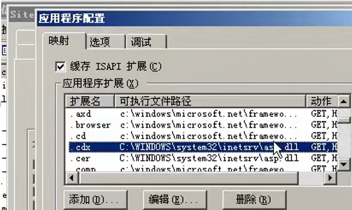
3.常见安全访问措施
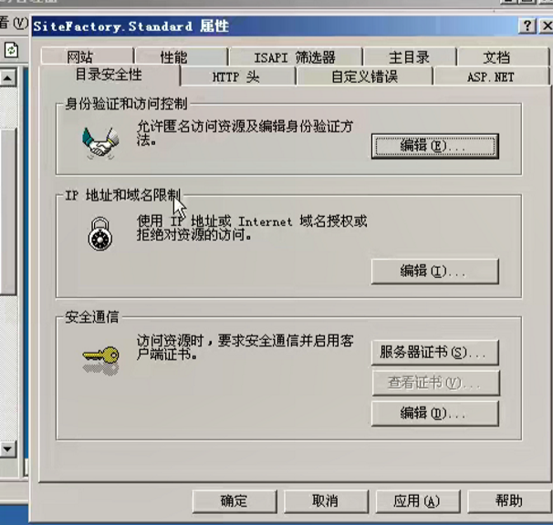
1.身份验证和访问控制
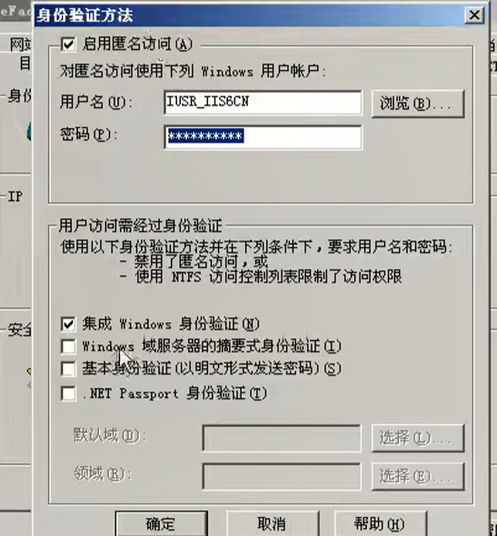
若不勾选匿名访问，用户在访问网站时要输入相应的服务器对应的用户名以及密码才ok
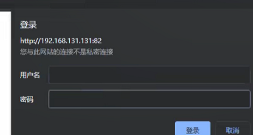
2.IP地址和域名限制
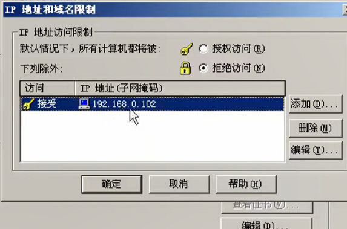
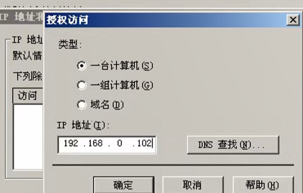
将其加入黑名单后访问就会受限
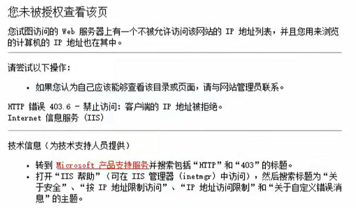
4.相应文件夹属性权限控制
1.服务器控制访问权限
从网页访问到相应的站点，属于Tnternet来宾账户，当我们在服务器上对相应文件的权限进行相关设置之后，可以限制一些黑客操作
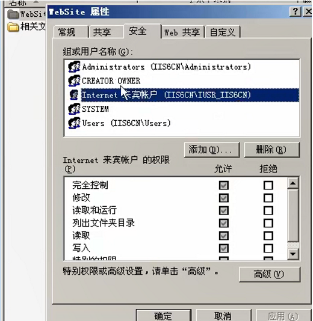
比如设置其权限全部拒绝之后，菜刀的后门就不能连接上进行有关操作了
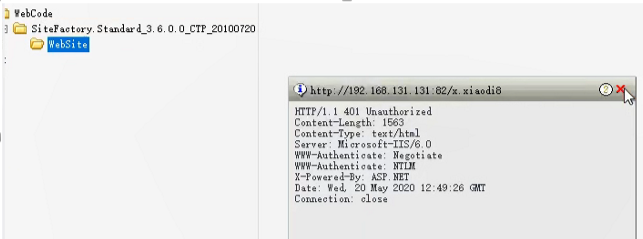
2.中间件控制访问权限
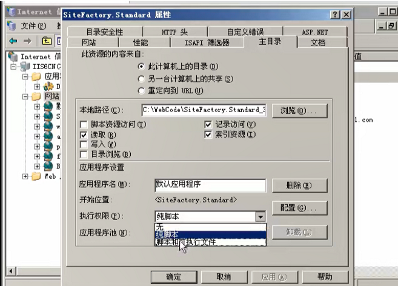
当我们设置其执行权限为无时，访问对应的小马后门会被拒绝
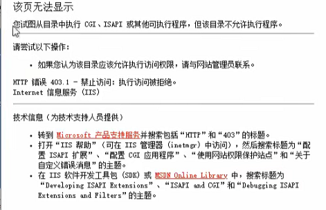
同理，用后门工具进行连接时会直接报错
这两种防护措施都是对特定的目录进行设置的，如果设置了整个网站的权限为此，那么这个网站就不能正常运行，因为其本身运行就是相应的脚本执行，一般来说是设置../image目录无权限
故绕过思路是将后门放置其它目录
5.中间件识别
1.从网站数据包进行识别
1.返回数据包
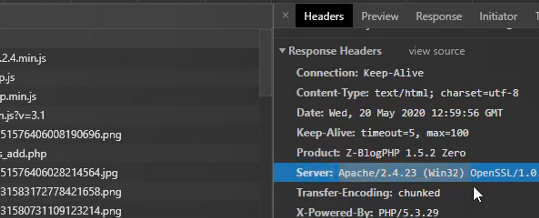
2.发送数据包
发送数据包的session通常带有
2.浏览器插件以及脚本工具
wappalyzer
其他脚本、工具
3.url输入不存在的路径
有的能成功显示，有的不能
6.识别脚本类型
1.从数据库类型推导
php ：mysql
aspx：SQL server/mysql
python：mysql/mongodb/postgresql
asp：ascess/sql server
jsp：mysql/oracle
access和SQL server不支持linux
2.从中间件识别
Apache：php iis： tomcat：jsp
3.扫描工具
4.谷歌搜集快照信息
5.分析网站数据包
例：phpsessionid、jspsessionid
本博客所有文章除特别声明外，均采用 CC BY-NC-SA 4.0 许可协议。转载请注明来自 senu11！